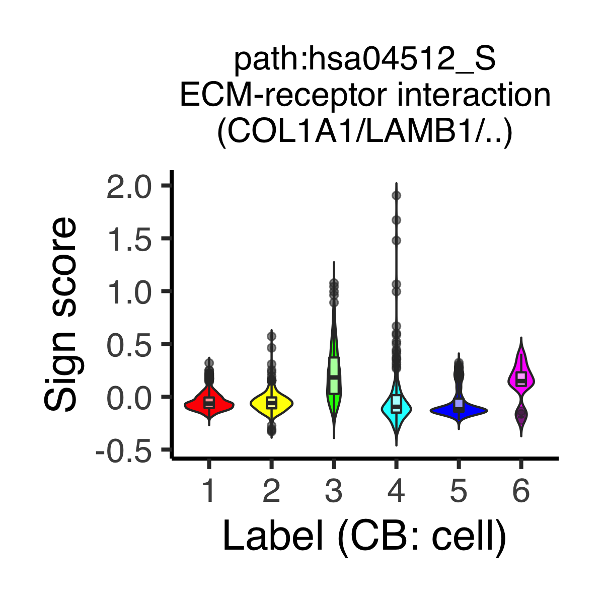
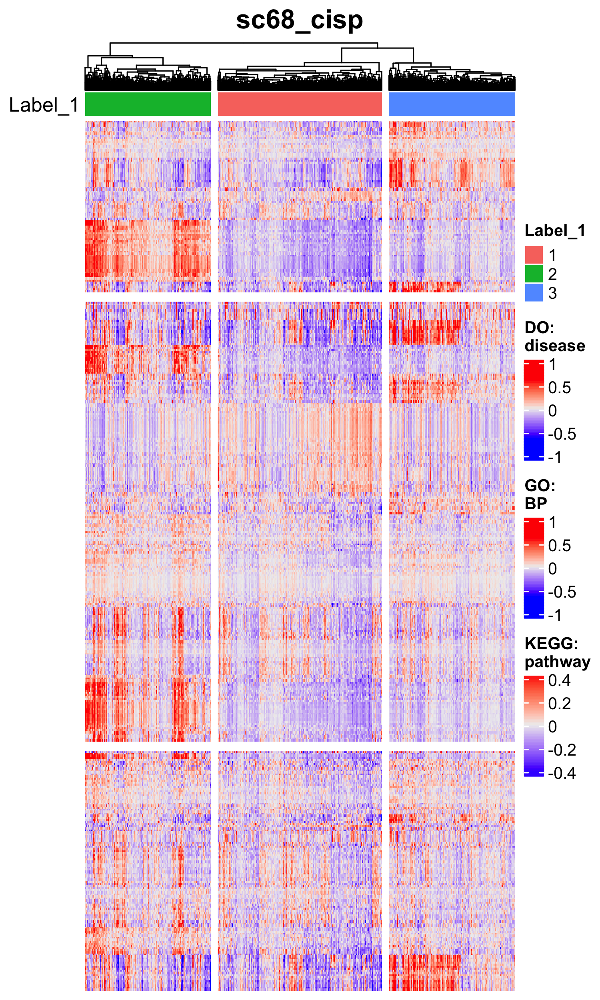
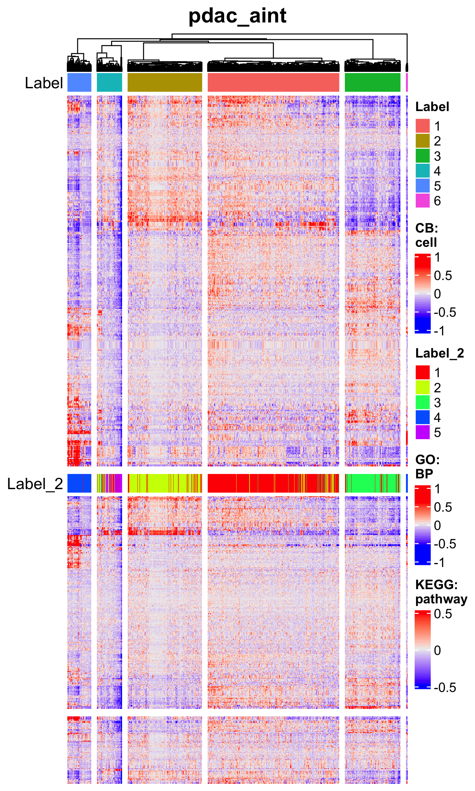
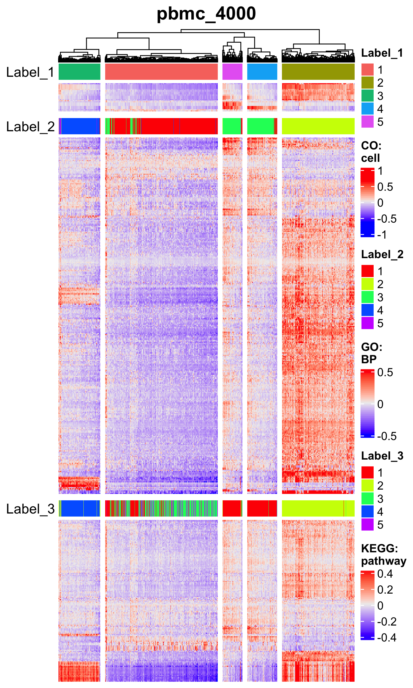
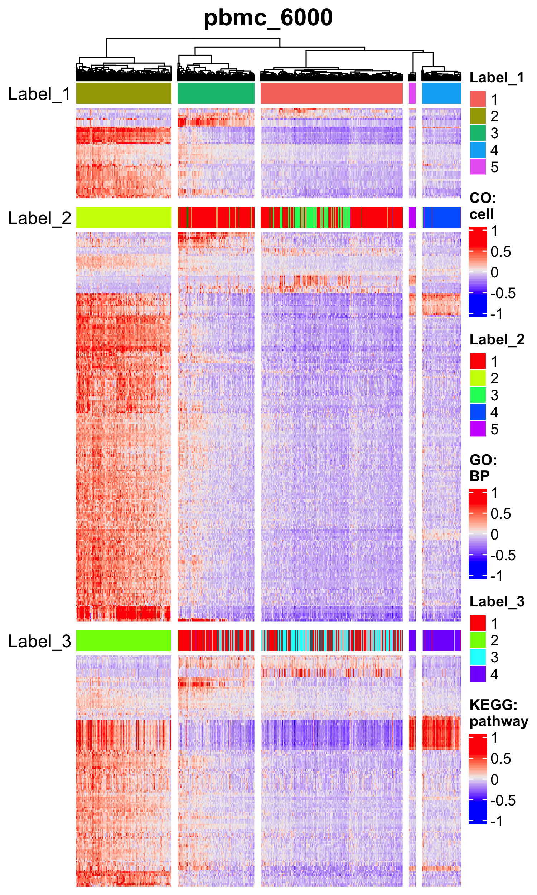
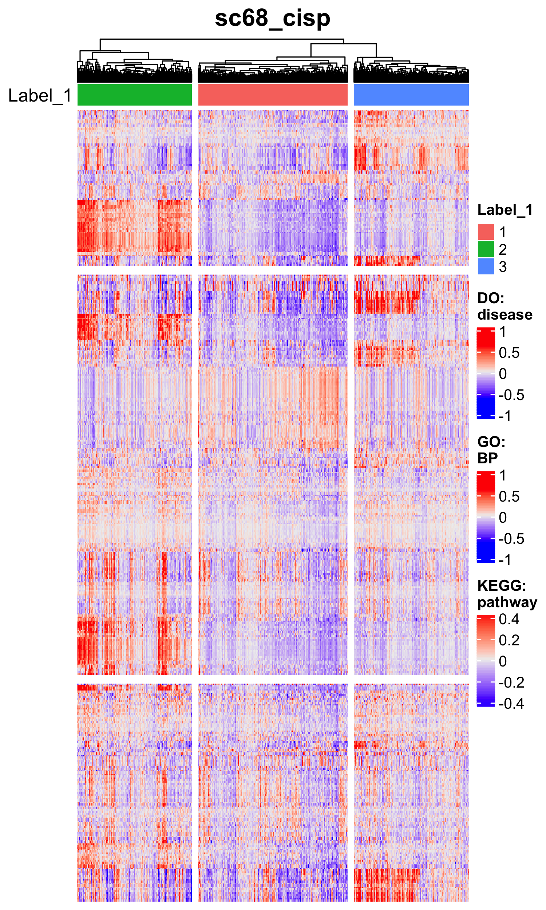
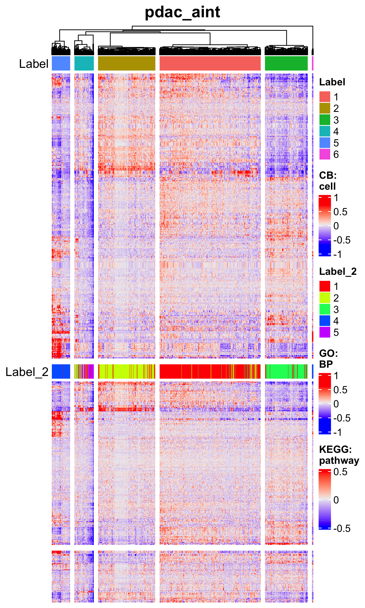
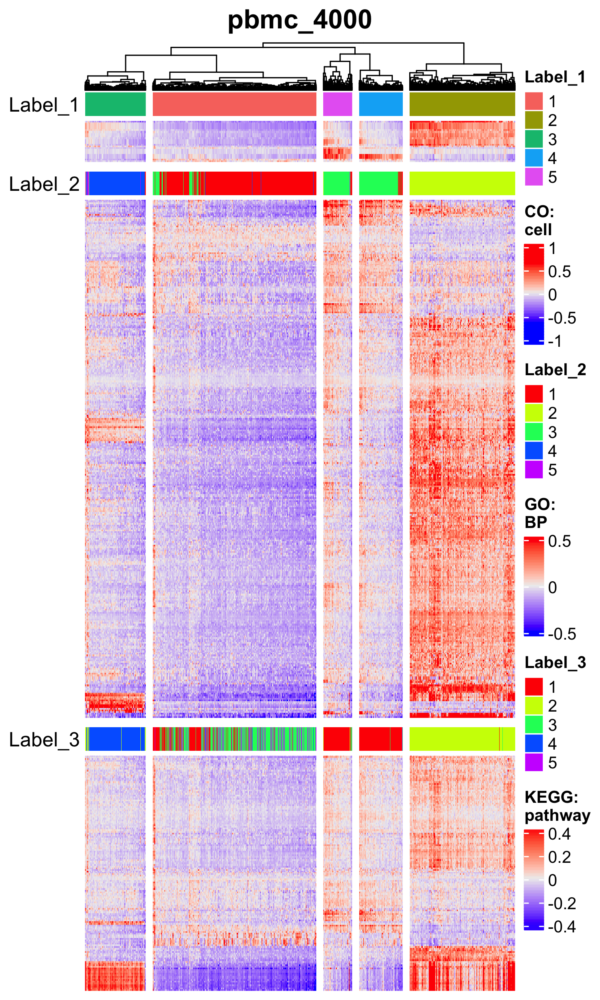
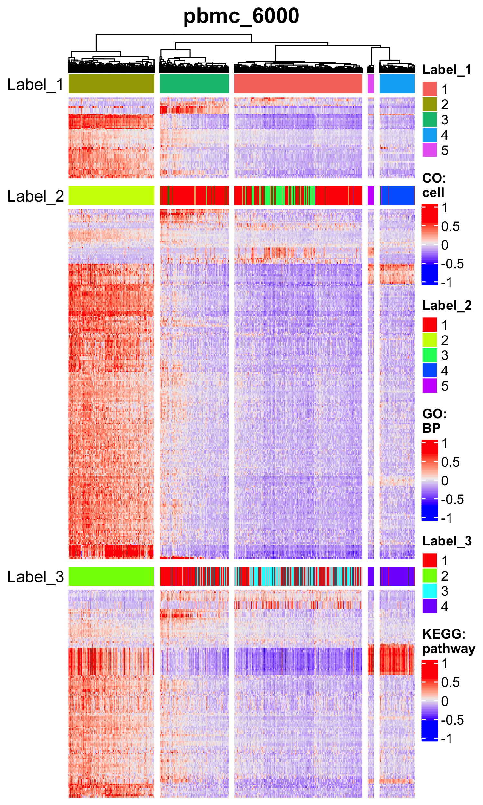
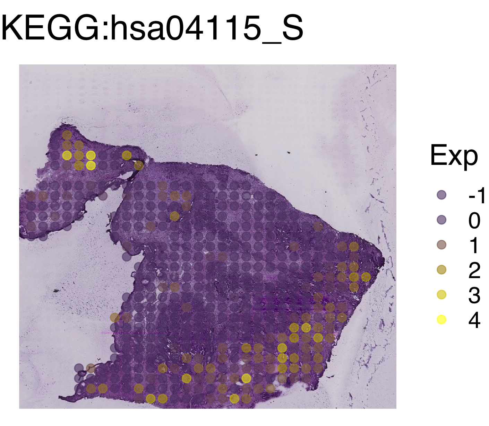

Chapter 12 Multi-layered analysis across all the signs
In this section, we concatenate all the sign-by-sample matrices (SSMs). Users can simultaneously visualize cell states from various viewpoints such as cell type, biological process, and signaling pathway.
12.1 Concatenate ASURAT objects
Load the data.
rm(list = ls())
source("R/plot.R")
source("R/function_asurat.R")
# ----------------------------------------
# Cell type
# ----------------------------------------
sc68_vehi_DO <- readRDS(file = "backup/01_104_sc68_vehi_DES_DO.rds")
sc68_cisp_DO <- readRDS(file = "backup/02_104_sc68_cisp_DES_DO.rds")
pdac_aint_CB <- readRDS(file = "backup/07_104_pdac_aint_DES_CB.rds")
pbmc_4000_CO <- readRDS(file = "backup/10_104_pbmc_4000_DES_CO.rds")
pbmc_6000_CO <- readRDS(file = "backup/11_104_pbmc_6000_DES_CO.rds")
# ----------------------------------------
# Biological process
# ----------------------------------------
sc68_vehi_GO <- readRDS(file = "backup/01_204_sc68_vehi_DES_GO.rds")
sc68_cisp_GO <- readRDS(file = "backup/02_202_sc68_cisp_reduction_GO.rds")
pdac_aint_GO <- readRDS(file = "backup/07_204_pdac_aint_DES_GO.rds")
pbmc_4000_GO <- readRDS(file = "backup/10_204_pbmc_4000_DES_GO.rds")
pbmc_6000_GO <- readRDS(file = "backup/11_204_pbmc_6000_DES_GO.rds")The following function concatenate_obj_sign() concatenates two ASURAT objects,
obj2 at the end of obj1.
sc68_vehi <- concatenate_obj_sign(obj1 = sc68_vehi_DO, obj2 = sc68_vehi_GO)
sc68_cisp <- concatenate_obj_sign(obj1 = sc68_cisp_DO, obj2 = sc68_cisp_GO)
pdac_aint <- concatenate_obj_sign(obj1 = pdac_aint_CB, obj2 = pdac_aint_GO)
pbmc_4000 <- concatenate_obj_sign(obj1 = pbmc_4000_CO, obj2 = pbmc_4000_GO)
pbmc_6000 <- concatenate_obj_sign(obj1 = pbmc_6000_CO, obj2 = pbmc_6000_GO)
rm(sc68_vehi_DO, sc68_vehi_GO,
sc68_cisp_DO, sc68_cisp_GO,
pdac_aint_CB, pdac_aint_GO,
pbmc_4000_CO, pbmc_4000_GO,
pbmc_6000_CO, pbmc_6000_GO)# ----------------------------------------
# Pathway activity
# ----------------------------------------
sc68_vehi_KEGG <- readRDS(file = "backup/01_302_sc68_vehi_reduction_KEGG.rds")
sc68_cisp_KEGG <- readRDS(file = "backup/02_302_sc68_cisp_reduction_KEGG.rds")
pdac_aint_KEGG <- readRDS(file = "backup/07_302_pdac_aint_reduction_KEGG.rds")
pbmc_4000_KEGG <- readRDS(file = "backup/10_304_pbmc_4000_DES_KEGG.rds")
pbmc_6000_KEGG <- readRDS(file = "backup/11_304_pbmc_6000_DES_KEGG.rds")
sc68_vehi <- concatenate_obj_sign(obj1 = sc68_vehi, obj2 = sc68_vehi_KEGG)
sc68_cisp <- concatenate_obj_sign(obj1 = sc68_cisp, obj2 = sc68_cisp_KEGG)
pdac_aint <- concatenate_obj_sign(obj1 = pdac_aint, obj2 = pdac_aint_KEGG)
pbmc_4000 <- concatenate_obj_sign(obj1 = pbmc_4000, obj2 = pbmc_4000_KEGG)
pbmc_6000 <- concatenate_obj_sign(obj1 = pbmc_6000, obj2 = pbmc_6000_KEGG)
rm(sc68_vehi_KEGG,
sc68_cisp_KEGG,
pdac_aint_KEGG,
pbmc_4000_KEGG,
pbmc_6000_KEGG)12.2 Find significant signs and genes across different data types
Assume that obj has clustering results for DO but does not for GO and KEGG.
Even if that is the case, one can investigate significant signs for GO and KEGG
by computing their separation indices across groups for DO.
As described in the previous section,
the following function auto_find_marker_sign() computes separation indices
of signs of interest for each subpopulation.
The arguments are obj,
data_type_for_label (data_type used for sample clustering),
category_for_label (category used for sample clustering),
algo_name_for_label (algo_name used for sample clustering),
data_type_for_expr (data_type that the signs of interest belong to),
category_for_expr (category that the signs of interest belong to).
This function helps users find positive and negative marker signs of label_1
with the positive and negative values of the indices, respectively.
# ----------------------------------------
# sc68_vehi
# ----------------------------------------
sc68_vehi <- auto_find_marker_sign(obj = sc68_vehi,
data_type_for_label = "GO",
category_for_label = "BP",
algo_name_for_label = "seuratFindClusters",
data_type_for_expr = "DO",
category_for_expr = "disease")
sc68_vehi <- auto_find_marker_sign(obj = sc68_vehi,
data_type_for_label = "GO",
category_for_label = "BP",
algo_name_for_label = "seuratFindClusters",
data_type_for_expr = "KEGG",
category_for_expr = "pathway")
# ----------------------------------------
# sc68_cisp
# ----------------------------------------
sc68_cisp <- auto_find_marker_sign(obj = sc68_cisp,
data_type_for_label = "DO",
category_for_label = "disease",
algo_name_for_label = "merlot",
data_type_for_expr = "GO",
category_for_expr = "BP")
sc68_cisp <- auto_find_marker_sign(obj = sc68_cisp,
data_type_for_label = "DO",
category_for_label = "disease",
algo_name_for_label = "merlot",
data_type_for_expr = "KEGG",
category_for_expr = "pathway")
# ----------------------------------------
# pdac_aint
# ----------------------------------------
pdac_aint <- auto_find_marker_sign(obj = pdac_aint,
data_type_for_label = "CB",
category_for_label = "cell",
algo_name_for_label = "seuratFindClusters",
data_type_for_expr = "KEGG",
category_for_expr = "pathway")The results are stored in
obj[["marker"]][[data_type_for_expr]][[category_for_expr]].
Here sep_I stands for separation indices of signs, which quantifies the
extent of separation between two different sets of random variables.
See previous section for implementing find_marker_sign() and
auto_find_marker_gene().
datatable(sc68_vehi[["marker"]][["KEGG"]][["pathway"]][["all"]],
rownames = FALSE)
datatable(sc68_cisp[["marker"]][["KEGG"]][["pathway"]][["all"]],
rownames = FALSE)
datatable(pdac_aint[["marker"]][["KEGG"]][["pathway"]][["all"]],
rownames = FALSE)As described in the previous section,
the following function plot_violin_signScore() shows distribution of
sign scores across all the clusters by violin plots.
The arguments are obj, sign_name (sign ID),
data_type_for_label (data_type used for sample clustering),
category_for_label (category used for sample clustering),
algo_name_for_label (algo_name used for sample clustering),
data_type_for_expr (data_type that the signs of interest belong to),
category_for_expr (category that the signs of interest belong to).
# ----------------------------------------
# sc68_vehi
# ----------------------------------------
p <- plot_violin_signScore(
obj = sc68_vehi, sign_name = "DOID:5409_V",
data_type_for_label = "GO", category_for_label = "BP",
algo_name_for_label = "seuratFindClusters",
data_type_for_expr = "DO", category_for_expr = "disease",
title = "DOID:5409_V\nLung small cell carcinoma\n(MKI67/BIRC5/..)",
title_size = 16, default_color = FALSE)
filename <- "figures/figure_01_0400.png"
ggsave(file = filename, plot = p, dpi = 300, width = 4, height = 4)



As described in the previous section,
the following function plot_pseudotime_vs_signscore() plots sign scores
versus pseudotime for a given sign, in which filled circles, bold lines,
and the shade regions stand for the expression values of samples, mean
expression levels, and standard deviations (this value is 0 if there are less
than three samples), respectively.
The arguments data_type_for_tree and category_for_tree are the data type
and category used for the branch-based clustering of cells (i.e., the
labels assigned to the branches), while data_type_for_expr and
category_for_expr for sign scores of signs of interest.
# ----------------------------------------
# sc68_cisp
# ----------------------------------------
p <- plot_pseudotime_vs_signscore(
obj = sc68_cisp, sign_name = "path:hsa01524_S",
data_type_for_tree = "DO", category_for_tree = "disease",
data_type_for_expr = "KEGG", category_for_expr = "pathway",
title = "KEGG:hsa01524_S\nPlatinum drug resistance\n(TOP2A/BIRC5/..)",
title_size = 22, label_name = "Label\n(DO: disease)",
xlabel = "Pseudotime (DO: disease)", ylabel = "Sign score")
filename <- "figures/figure_02_0400.png"
ggsave(file = filename, plot = p, dpi = 300, width = 7.5, height = 5)


The following function plot_MultiHeatmaps_SignxSamp() vertically concatenates
two or more heat maps across different databases.
The arguments are obj (ASURAT object), data_types (vector of data types,
where the first element is used for the cell clustering),
categories (vector of categories, where the first element is used for the
cell clustering), algo_names (vector of the name of algorithm used for
the cell clustering: in the current version, one of NULL,
"pam", "hclustCutree", "seuratFindClusters", and "merlot"),
show_labels (vector of TRUE or FALSE: if TRUE, clustering labels
are shown), splitting (if TRUE, heat map is split by the first element of
data_type), method (agglomeration method to be used, e.g.,
complete, ward.D2, average, etc.),
show_nReads (if TRUE, number of reads is shown), title, names
(vector of names of the color bar), show_rownames_sign
(if TRUE, the name of sign is shown), show_rownames_label
(if TRUE, the name of label is shown), show_rownames_nReads
(if TRUE, the name of number of reads is shown), and
default_colors (vector of TRUE or FALSE for each classification:
if TRUE, the default color of ggplot is used, otherwise rainbow).
Tips:
To check the methods used for clustering, see obj[["sample"]].
# ----------------------------------------
# sc68_vehi
# ----------------------------------------
filename <- "figures/figure_01_0410.png"
png(file = filename, height = 2500, width = 1500, res = 300)
plot_MultiHeatmaps_SignxSamp(
obj = sc68_vehi,
data_types = c("DO", "GO", "KEGG"),
categories = c("disease", "BP", "pathway"),
algo_names = c("seuratFindClusters", "seuratFindClusters", NULL),
show_labels = c(TRUE, TRUE, FALSE),
splitting = TRUE, method = "ward.D2", show_nReads = FALSE,
title = "sc68_vehi",
names = c("DO:\ndisease", "GO:\nBP", "KEGG:\npathway"),
show_rownames_sign = FALSE, show_rownames_label = FALSE,
show_rownames_nReads = FALSE, default_colors = c(TRUE, FALSE, FALSE))
dev.off() 







The following function plot_MultiBargraphs_sign() shows the population sizes
by two-variable bar graphs.
The arguments are obj, data_type_1 (for data type in x-axis),
category_1 (for x-axis), algo_name_1 (for x-axix), data_type_2
(for data type in y-axis), category_2 (for y-axis),
algo_name_2 (for y-axis), title, title_size,
cbar_title (label of the color bar), xlabel, ylabel, ymax, and
default_color (if TRUE, the default color of ggplot is used,
otherwise rainbow).
# ----------------------------------------
# sc68_vehi
# ----------------------------------------
p <- plot_MultiBargraphs_sign(
obj = sc68_vehi, data_type_1 = "DO", category_1 = "disease",
algo_name_1 = "seuratFindClusters",
data_type_2 = "GO", category_2 = "BP",
algo_name_2 = "seuratFindClusters",
title = "sc68_vehi", title_size = 18, cbar_title = "Label\n(GO: BP)",
xlabel = "Label (DO: disease)", ylabel = "Number of samples", ymax = 3500,
default_color = FALSE)
filename <- "figures/figure_01_0415.png"
ggsave(file = filename, plot = p, dpi = 300, width = 5.5, height = 4)


Save the objects.
saveRDS(sc68_vehi, file = "backup/01_400_sc68_vehi_all.rds")
saveRDS(sc68_cisp, file = "backup/02_400_sc68_cisp_all.rds")
saveRDS(pdac_aint, file = "backup/07_400_pdac_aint_all.rds")
saveRDS(pbmc_4000, file = "backup/10_400_pbmc_4000_all.rds")
saveRDS(pbmc_6000, file = "backup/11_400_pbmc_6000_all.rds")Load the objects.
sc68_vehi <- readRDS(file = "backup/01_400_sc68_vehi_all.rds")
sc68_cisp <- readRDS(file = "backup/02_400_sc68_cisp_all.rds")
pdac_aint <- readRDS(file = "backup/07_400_pdac_aint_all.rds")
pbmc_4000 <- readRDS(file = "backup/10_400_pbmc_4000_all.rds")
pbmc_6000 <- readRDS(file = "backup/11_400_pbmc_6000_all.rds")12.3 Spatial mapping by Spaniel
Load the data.
pdac_aint <- readRDS(file = "backup/07_400_pdac_aint_all.rds")
pdac_ast1 <- readRDS(file = "backup/05_005_pdac_ast1_normalized.rds")
fn <- "data/2020_001_Moncada/pdac_ast1/tissue_positions_list_spatial_object.tsv"Create a Seurat object keeping only ST spots in integrated data pdac_aint.
# ----------------------------------------
# pdac_aint
# ----------------------------------------
tmp <- pdac_aint[["sample"]]
tmp <- tmp[which(tmp$orig_ident == "ST"),]
pdac_aint[["sample"]] <- tmp
mat <- pdac_aint[["sign"]][["KEGGxSample"]][["pathway"]]
tmp <- pdac_aint[["sample"]][["barcode"]]
mat <- mat[, which(colnames(mat) %in% tmp)]
colnames(mat) <- pdac_ast1[["sample"]][["spot"]] # This is required by Spaniel
# ----------------------------------------
# se
# ----------------------------------------
se <- Spaniel::createSeurat(counts = mat, barcodeFile = fn,
projectName = "PDAC-A", sectionNumber = "1")
se@images <- pdac_aint[["misc"]][["images"]]Pre-processing.
tmp <- pdac_aint[["sample"]][["seuratFindClusters_CB_cell"]]
se@meta.data[["cluster"]] <- tmp
SetIdent(se, value = "cluster")
se <- ScaleData(se)Visualize sign scores on histological images.
Note that in se underscores "_" were replaced with hyphens “-”.
p <- spanielPlot(object = se, grob = se@images[[1]], plotType = "Gene",
gene = "path:hsa04512-S", ptSizeMax = 2.5, ptSizeMin = 0,
customTitle = "KEGG:hsa04512_S")
filename <- "figures/figure_07_0420.png"
ggsave(file = filename, plot = p, dpi = 300, width = 4.7, height = 4.1)- KEGG:hsa04512_S ECM-receptor interaction (COL1A1/LAMB1/..)

- KEGG:hsa04115_S p53 signaling pathway (THBS1/SERPINE1/..)

- KEGG:hsa04972_S Pancreatic secretion (PNLIP/CTRB1/..)

- KEGG:hsa04662_V B cell receptor signaling pathway (FOS/NFKBIA/..)